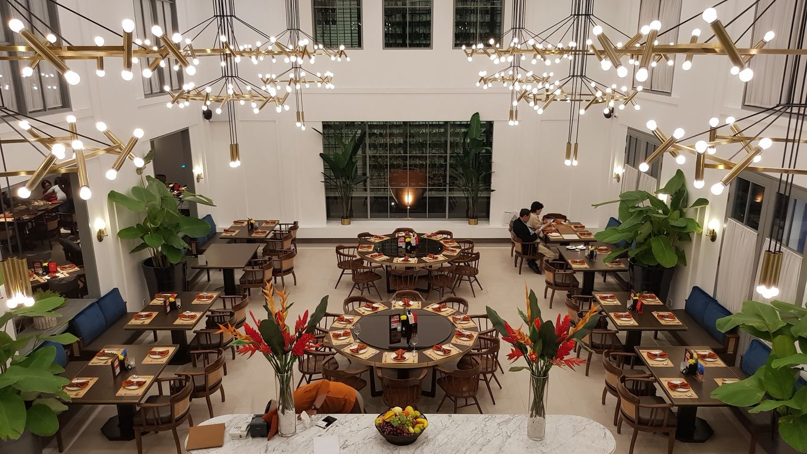

Terinspirasi oleh kekayaan kuliner di wilayah ini, Seribu Rasa menawarkan hidangan lokal dan hidangan laut yang lezat yang mencerminkan kekayaan cita rasa Asia Tenggara dan Indonesia. Setiap resep tradisional disiapkan dengan bahan-bahan terbaik dan disempurnakan oleh keahlian kuliner dari Chef kami, membawa pelanggan kami dalam perjalanan gastronomi yang menakjubkan melalui "Seribu Rasa".
